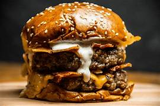

Special stuffed burger Recipe

This burger is a big juicy burger filled with cheese, chilies,mushroom. it's a grilled burger and basted with yummy steak sause.Any type of cheese u want can be used.This is one of my best recipe
Ingredient
- 2 pound ground beef
- 1(10 fluid ounce) bottle steak sauce,(e.g. A-1), divided
- 2 tablespoon fajita seasoning
- 2 tablespoon dried minced onion
- 8 slices of American cheese, divided
- 2(4 ounce) cans chopped green chiles, drained
- 1(4 ounce) can be sliced mushrooms, drained
Steps
- in a medium bowl, mix together the ground beef, 1/4 cup of the steak sauce,fajita seasoning,and dried onion until well blended. Form the mixture into 8 patties. Set aside 4 of the patties. On the other 4 patties,place one slice of cheese,some of the green chiies,and some mushrooms. Place the other 4 patties over the top, press down, and seal the edges so the goodies do not escape.
- Preheat an outdoor grill for low heat. Lightly oil grate.
- Place patties on the grill, and let them brown on both sides. Once they begin to brown, brush the tops with remaining steak sauce. Continue to grill for about 30 minutes, basting frequently with steak sauce, until meat is no longer pink, and the juices run clear. When the meat is ready to come off the grill, place the remaining 4 slices of cheese over the tops of the patties. Serve on buns, or just by themselves.